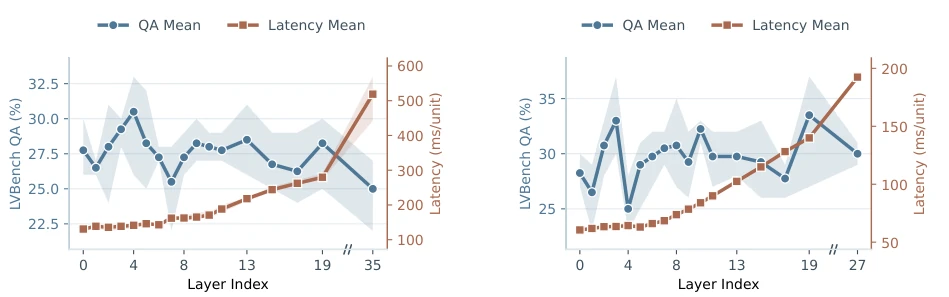
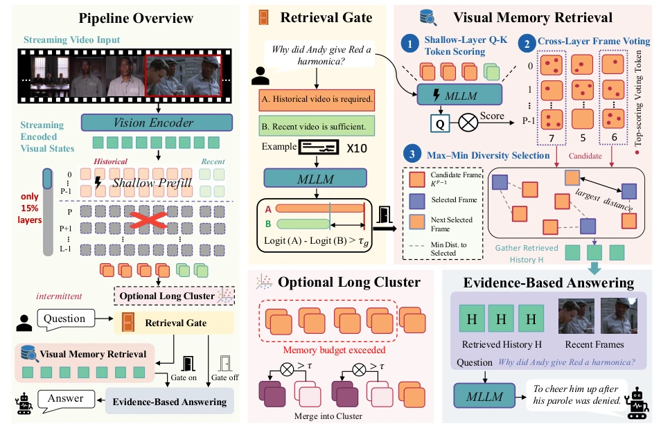
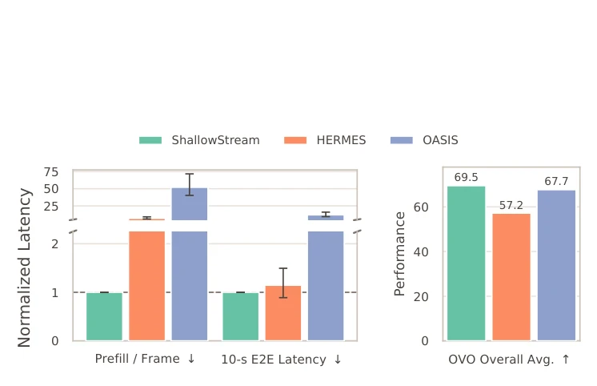
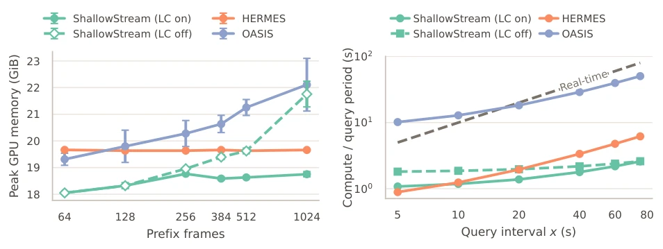
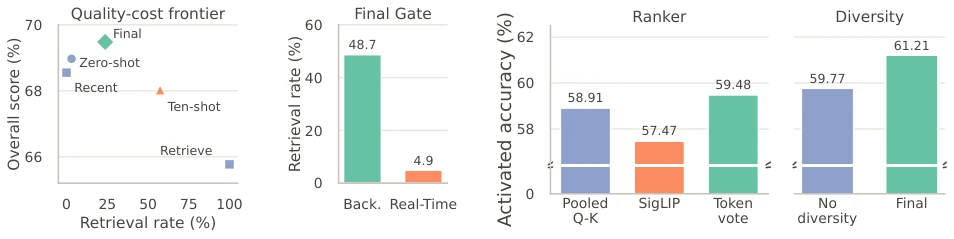
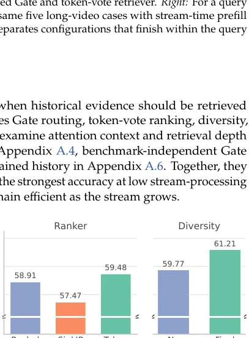
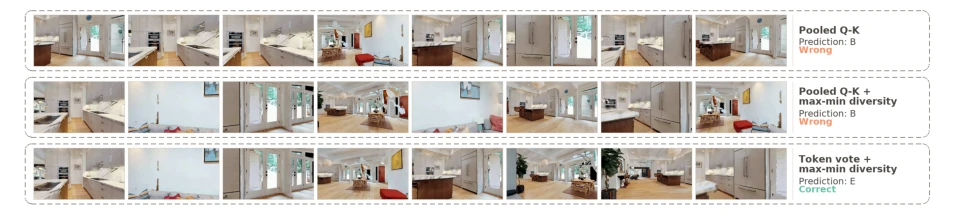
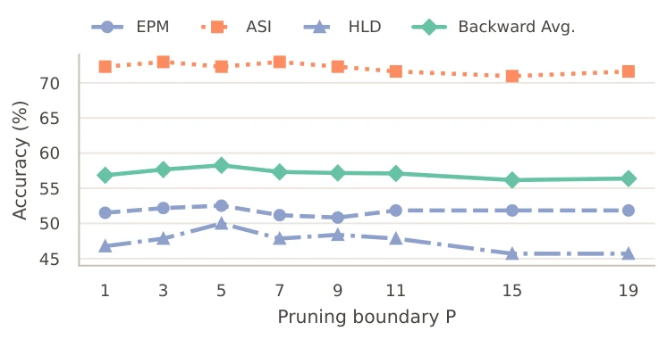
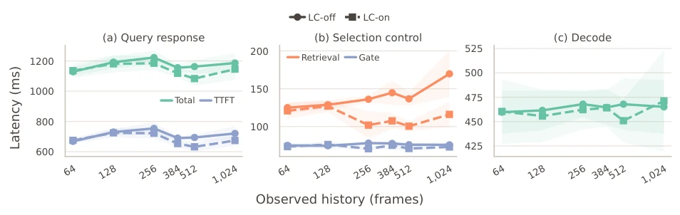

This paper pours cold water on streaming video understanding, but does so appropriately. The authors keenly point out that running full-depth pre-filling for every frame with large models is simply "using a cannon to kill a chicken," not only consuming power and occupying VRAM, but causing KV Cache to explode linearly with depth. The core logic of ShallowStream is "shallow indexing, deep answering," which sounds exactly like "junior employees work, senior employees decide" in the workplace. It utilizes shallow networks for retrieval, only awakening the full model when needed. While performance remains competitive, computation is reduced by 52 times, and latency is lowered by 11 times. However, this "lazy" strategy is highly dependent on model layers; if shallow features are insufficient, it may be exposed. Additionally, it relies on the semantic discrimination ability of pre-trained models; if the Gate is improperly calibrated, it may misjudge. Overall, this is a smart engineering optimization, not an algorithmic revolution, suitable for teams with tight budgets but unwilling to sacrifice accuracy, providing a new paradigm for real-time visual processing in embodied intelligence.
Streaming video understanding is crucial in embodied intelligence and autonomous driving, but existing MLLMs incur huge overhead when processing continuous video streams. The main problem lies in the asymmetry of the "streaming" stage: frames arrive continuously, queries are sparse. Existing methods such as ReKV [10], HERMES [53], etc., in order to retain historical context, often execute full-depth Transformer pre-filling for every frame, causing KV Cache to grow linearly with depth, resulting in severe computational waste. Additionally, compression performed to save VRAM (such as StreamKV [8]) may lose key evidence. Although OASIS [23] retrieves on demand, the routing decision itself requires inference overhead. ShallowStream aims to solve the computational redundancy brought by this "full-depth pre-filling," utilizing the observed shallow retrieval capability to decouple the streaming processing and answering stages.

Figure 2 Layer-wise retrieval capability and stream-time prefill cost on LVBench. The left and right plots show results for Qwen3-VL-8B and LLaVA-OneVision-7B, respectively. We vary only the layer used for video-question matching. Latency is measured per video unit.
The overall process is divided into two stages: query-agnostic streaming processing and query-time answering. First, in the streaming stage, ShallowStream processes input video units only through the shallow layers (e.g., first P layers) of the MLLM, generating shallow KV cache as a visual index, skipping deep computation. This builds a lightweight full-history visual index and retains visual encoding for subsequent reorganization. Second, in the query stage, a Query-Logit Gate is introduced to judge whether historical evidence is needed through text prompts. If needed, shallow attention scores are utilized for Token Voting and Max-Min Diversity Selection to retrieve key frames, avoiding redundancy. Finally, only the retrieved historical evidence and recent context are fed into the full-depth MLLM for generation, ensuring inference consistency. Additionally, for long histories, the optional Long-Cluster module compresses old units into fixed-size representatives to prevent infinite VRAM growth. This module dynamically merges similar frames by calculating the similarity between unit descriptors and centroids, retaining only representative KV, significantly reducing storage pressure.

Figure 3 Overview of ShallowStream. Incoming video units are processed only by the shallow MLLM layers to build a lightweight visual memory. At query time, a query-logit gate determines whether historical retrieval is needed; when activated, shallow-layer attention scoring, cross-layer frame voting, and max-min diversity selection identify the evidence frame to retrieve. The selected history and recent context are then processed by the full-depth MLLM for answer generation. Under a constrained memory budget, the optional long-cluster module compresses older units into fixed-size representatives.
Evaluated on OVO-Bench and StreamingBench, baselines include HERMES [53], OASIS [23], SimpleStream [31], etc. Using Qwen3-VL-8B and LLaVA-OneVision-7B as backbones. Results show that ShallowStream performance is on par with the strongest streaming methods, but per-frame pre-filling is reduced by 52.1 times, and 10-second end-to-end latency is reduced by 11.9 times. Ablation studies show that the Gate can effectively distinguish between retrieval and current scene requirements, and Token Voting is more accurate than simple Q-K retrieval. Long-cluster compression stabilizes VRAM usage while maintaining performance. On OVO-Bench, the Qwen3-VL version reaches 69.5 points, on par with OASIS. VRAM tests show that after enabling compression, peak VRAM stabilizes at 18 GiB, while the uncompressed version increases with frame count. Latency tests indicate that under an 80-second query interval, computational demand is far below the real-time boundary, proving its feasibility in long video streams.

Figure 1 Continuous-stream efficiency. Per-frame prefill and end-to-end latency with one query every 10s. Latency are normalized to ShallowStream. Performance is the full OVO-Bench average.

Figure 4 Continuous-stream memory and compute demand. Left: Peak GPU memory over lengths from 64 to 1,024 frames, averaged over five videos. Both variants use the final calibrated Gate and token-vote retriever. Right: For a query interval 𝑥, each curve combines mean query computation over the same five long-video cases with stream-time prefill accumulated over 𝑥seconds at 1 FPS. The dashed 𝑦= 𝑥boundary separates configurations that finish within the query interval (below) from those whose compute exceeds it (above).

Figure 5 Gate ablation on OVO-Bench. Left: overall quality versus retrieval rate under controlled routing alternatives with fixed branch outputs. Right: the final Gate’s retrieval allocation by benchmark section.

Figure 6 Retriever ablation on OVO-Bench queries se- lected by the calibrated Gate. Rankers are compared with diversity and temporal expansion disabled; diversity is compared with preceding-unit expansion.

Figure 7 Qualitative retrieval case study on OVO-Bench EPM. For the question “Where is the red and white checkered rug?” (ground-truth answer: E), each row shows the eight historical units selected by pooled shallow Q–K, pooled shallow Q–K with max–min diversity, and the final token-vote retriever with max–min diversity. Only the final retriever selects complementary evidence that supports the correct answer.

Figure 8 Sensitivity to the pruning boundary 𝑃on OVO-Bench Backward under the final calibrated Gate and token-vote retriever. Routing and evidence selection are held fixed across depths.

Figure 9 Query-time scaling on an NVIDIA RTX 5090. All six collected history lengths are shown. (a) Total query latency and time to first token (TTFT). (b) Evidence-selection and Gate latency. (c) Decoding latency. Solid circles denote full-history LC-off and dashed squares denote the matched final LC-on setting. Curves show means over five retrieval queries, and shaded regions denote 95% confidence intervals.